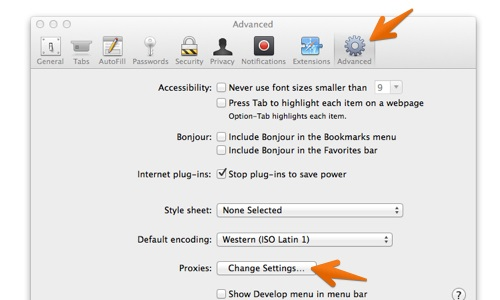
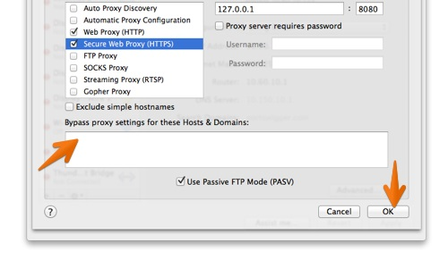

Safariで、Safariメニューに移動し、設定をクリックします。

詳細設定タブをクリックし、プロキシの下の設定の変更ボタンをクリックします。これにより、現在のネットワークアダプタのネットワーク構成設定が開きます。

127.0.0.1)と、(ラベルのない)ポートフィールドにBurp Proxyリスナーのポート番号(デフォルトは8080)を入力します。
セキュリティで保護された Web プロキシ (HTTPS)チェックボックスでもこの手順を行います。

OKと適用をクリックし、開いているダイアログボックスを閉じます。
